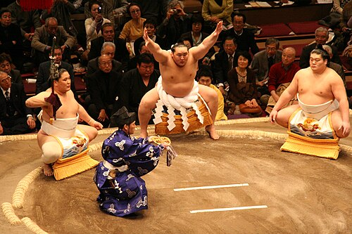
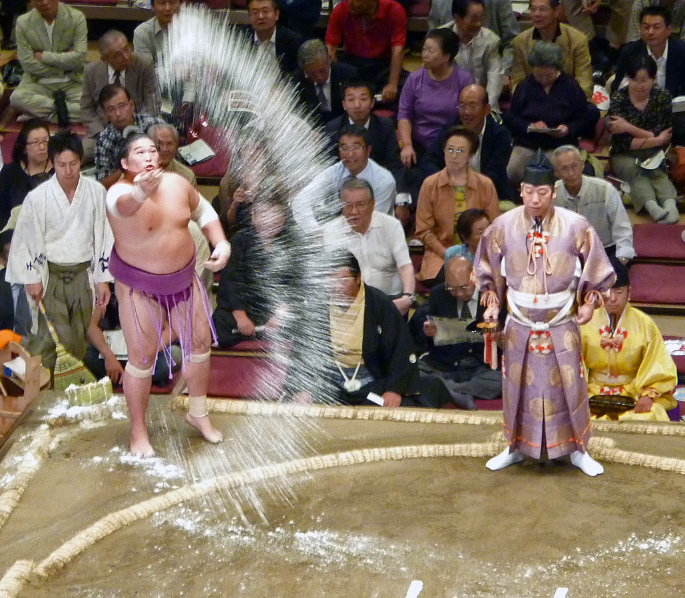
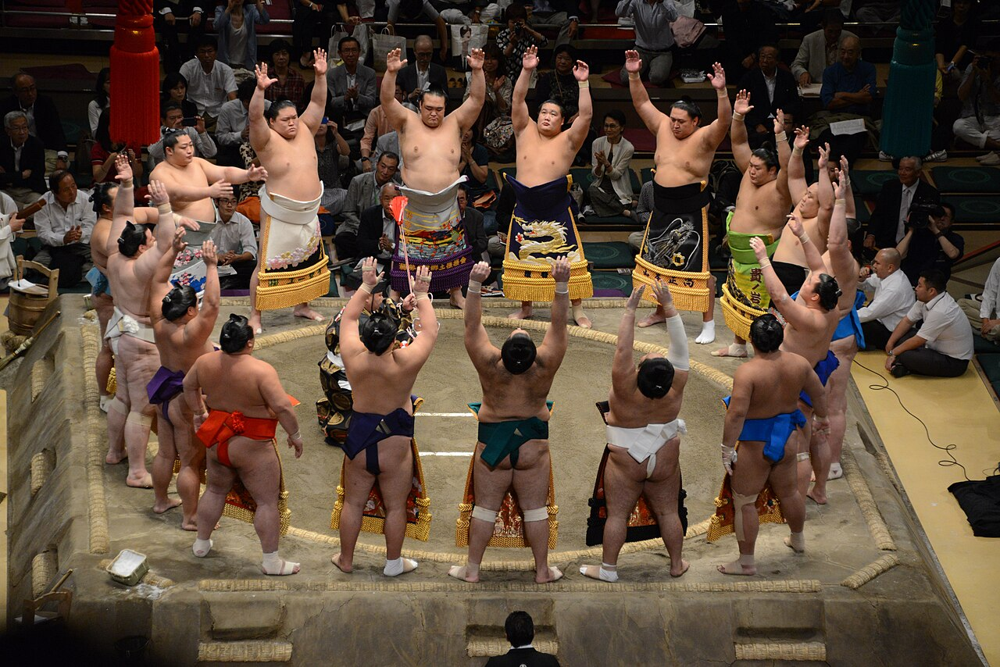
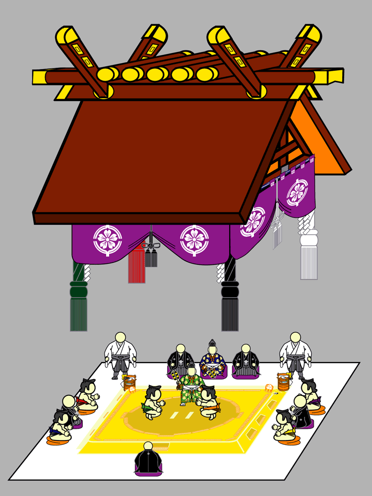

The Rules of Sumo
Before we can get into specific topics about sumo, it's best to first learn what the basic rules of sumo are.
How to Win a Bout
There are two main ways to win in sumo: Force the other wrestler out of the ring, or force the other wrestler to touch the ground with anything but the soles of his feet. Once either of these things happen, the bout is over and a winner is declared by the gyoji (the referee). Wins are recorded along side a kimarite (a winning technique), of which there are 82. However, in practice only a dozen of kimarite are usually used by wrestlers, with the most common ones being yorikiri (frontal force out) and oshidashi (frontal push out).
Illegal Moves/Fouls
Illegal moves, called kinjite, are fouls that a wrestler can commit that will cause him to immediately lose the bout. They are as follows:
- Striking the opponent with a closed fist.
- Grabbing the opponent's hair.
- Jabbing at the opponent's eyes or solar plexus.
- Simultaneously striking both of the opponent's ears with the palms.
- Grabbing or pulling the opponent's groin.
- Grabbing the opponent's throat.
- Kicking at the opponent's chest or waist.
- Bending back one or more of the opponent's fingers.
Any of these kinjite are rare to see in the upper divisions of pro sumo, but the most common one is pulling the opponent's hair. While not a kinjite, if a wrestler's mawashi (the belt that they wear) comes undone and they end up flashing the crowd, they will automatically lose the bout.
A more common foul that occurs that also isn't a kinjite is a matta, which is a false start. To start a bout, both wrestlers have to place both of their fists on the ground; once both wrestlers do this, they launch at each other in what is called the tachiai (the initial charge) and the bout begins. A matta occurs when either of the wrestlers start the tachiai before both wrestlers' fists are on the ground. When a matta is called by the gyoji, the wrestler who commited it usually gives a little "I'm sorry" bow to the other wrestler and the ring-side judges, and then the wrestlers try to start the bout again. There's no penalty to the wrestler who commits a matta, but if it happens several times in a row then it makes the wrestler look bad.
Where are the Weight Classes?
That's the point, there are no weight classes in pro sumo! This is one of the reasons why wrestlers get so heavy, it's so that they can have a weight advantage over their opponent. Being heavier means that you're harder to push around, which gives you a competitive edge in your bouts. Weight isn't everything though! If a wrestler is too heavy, they might not be able to move around very well which can limit their offense and defense. Technique is another important factor. If a wrestler's plan is to simply be the bigger guy and bull rush his opponent out of the ring, they most likely won't make it very far in sumo, as opponents (even comparatively tiny guys) who have/know more technique can easily pull a counter move like a slap down or a throw at the edge of the ring to win. Now, there are weight classes in amateur sumo (also known as amasumo) for those that want to participate on a more level playing field, but amasumo still has an open weight class similar to pro sumo for those that want that experience.
The Structure of Sumo
There are six divisions in pro sumo. In order of descending prestige:
- Makuuchi (also refered to as Makunouchi)
- Juryo
- Makushita
- Sandanme
- Jonidan
- Jonokuchi
Wrestlers enter the Jonokuchi division when they first start out, and try their best to work their way up to top division (Makuuchi), if they ever get that far. Lots of wrestlers get stuck in the lower divisions and can never make it to the top. Only the best can make it to the top two divisions of Juryo and Makuuchi, which are the only divisions where the wrestlers get a salary; the other four divisions only give their wrestlers a monthly allowance. Which division a wrestler is in largely impacts his status within his training stable, influencing what kind of clothes he can wear and what kind of chores he must do. It also dictates how many bouts he must fight in; the wrestlers in the top two divisions must fight once every day for all 15 days of each tournament, while the lower division wrestlers fight for only 7 of the 15 days.
Just like how there are six divisions in sumo, there are also six tournaments (called honbasho or basho) that take place throughout the year. These bashos only happen in the middle of the odd numbered months (January, March, ect.) and last for 15 consecutive days. Bashos take place in four different locations: Tokyo (January, May, September), Osaka (March), Nagoya (July), and Fukuoka (November).


